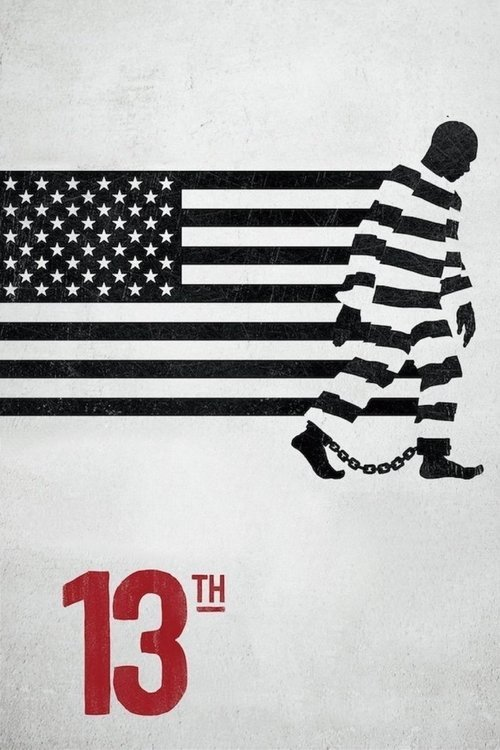

Enmienda XIII (2016)
Sinopsis Rápida
¿La esclavitud terminó realmente en Estados Unidos? Este impactante documental desvela la perturbadora verdad tras la 13ª Enmienda y su legado en el sistema carcelario moderno.
Sinopsis Detallada
Ava DuVernay dirige este escalofriante documental que explora la Enmienda XIII de la Constitución estadounidense, analizando cómo, a pesar de abolir la esclavitud, creó un sistema legal que perpetúa la opresión racial a través del encarcelamiento masivo. Con entrevistas, imágenes de archivo y estadísticas impactantes, la película revela la conexión histórica entre la esclavitud y la encarcelación de afroamericanos, ilustrando la persistencia del racismo sistémico en los Estados Unidos. Una obra necesaria que provoca reflexión y exige justicia social.
¿Por qué tenés que verla?
- Una mirada impactante y reveladora a la historia de la esclavitud en Estados Unidos y su legado.
- La dirección poderosa de Ava DuVernay hace que la información sea accesible y emocionalmente efectiva.
- El documental ha generado un importante debate sobre la reforma carcelaria y la justicia racial.
- Importancia histórica y relevancia social actual.
Idea Extra
Comparación entre la situación carcelaria de afroamericanos en el pasado y el presente, mostrando las estadísticas actuales y posibles soluciones para una reforma.
{{CONTENIDO_RELACIONADO}}